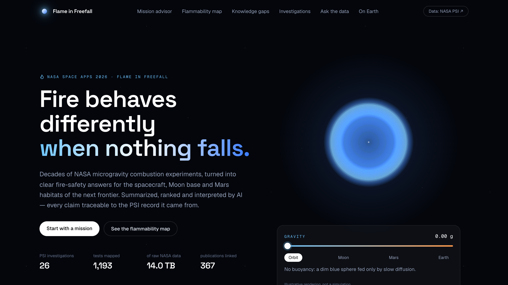
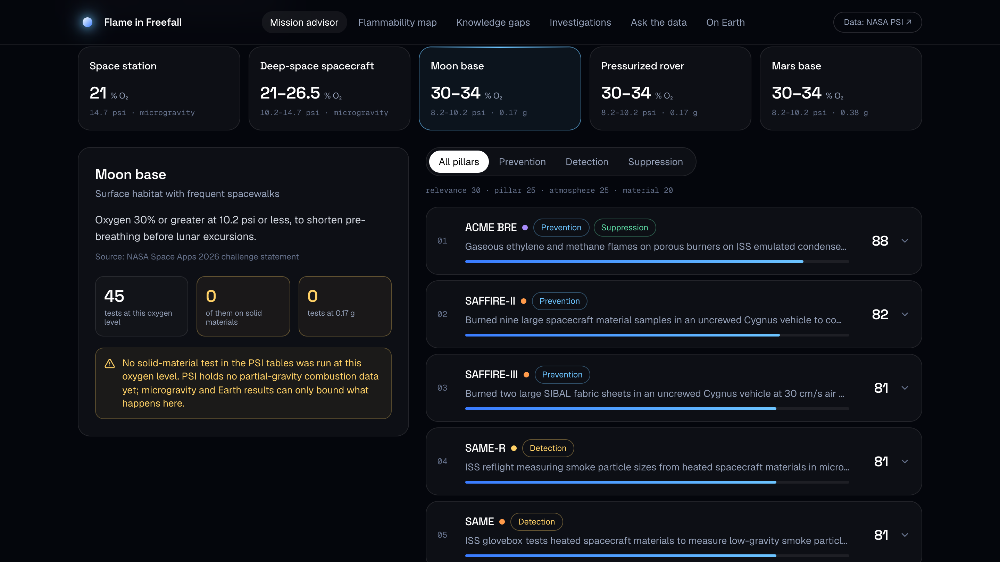
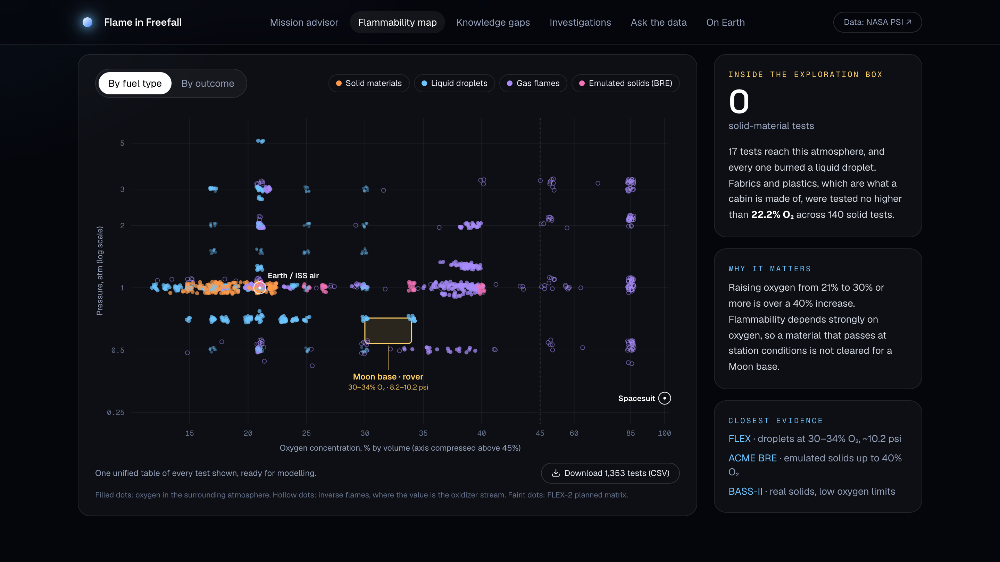
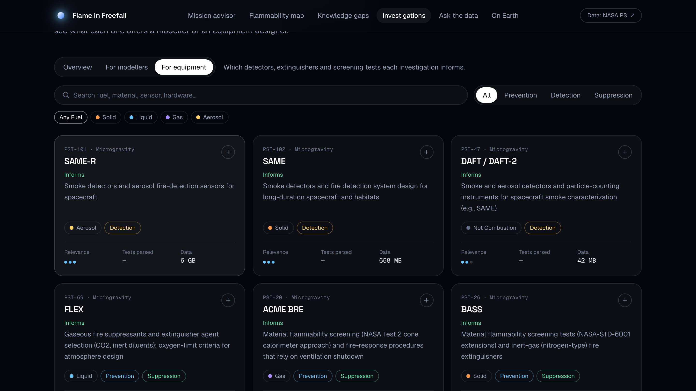
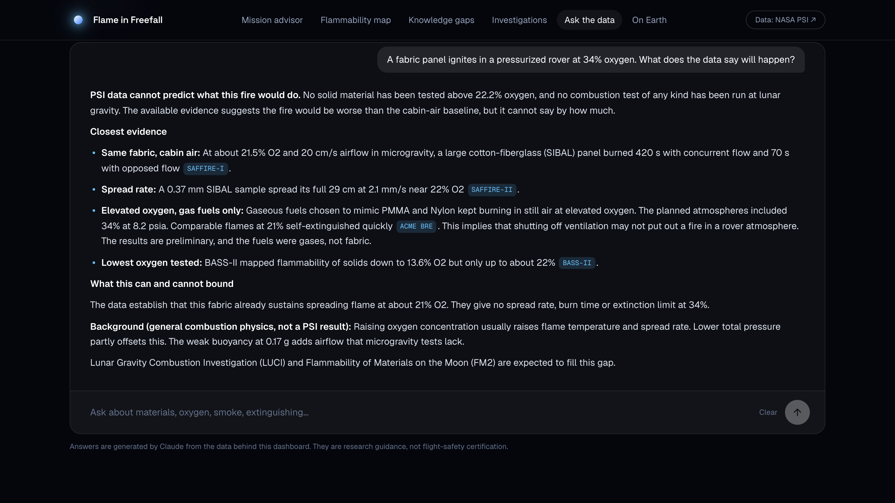

An AI dashboard that turns NASA's microgravity combustion data into fire-safety answers for the Moon base, rovers and Mars.
In microgravity a flame becomes a blue sphere fed by diffusion, so Earth experience does not transfer. NASA has studied this for decades, but the results are hard to find, harder to compare, and harder yet to interpret.




26 PSI records and 28 official experimental tables, through the repository's public interface.
A script reads oxygen, pressure, fuel and outcome from each table. Assumptions are marked.
Claude returns a fixed set of fields per record, using only that record.
A published formula: relevance, safety pillar, atmosphere match, material realism.